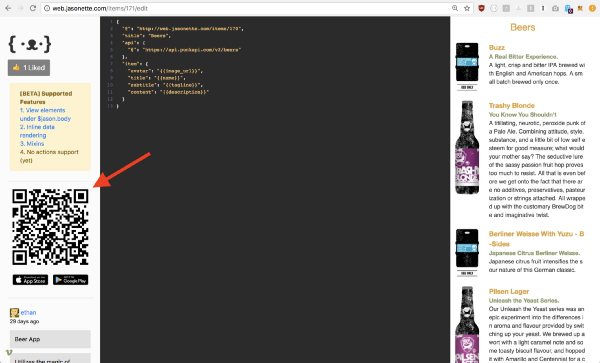
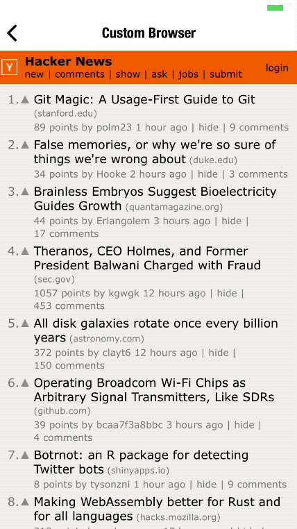

7 Jasonette Tutorials
The following tutorials are using Jasonette as the main technology.
7.1 Build a QRCode/Barcode scanning app with 26 lines of JSON
This tutorial was posted by Ethan on Medium

Nowadays we see QR code everywhere. We see it on a billboard, we see it embedded in product packaging, we use it to share Bitcoin public key.
QR code is like a 2D version of barcode.
As a publisher, you can pack all kinds of data in it as an image, and as a consumer you can simply scan the QR code to extract whatever is stored in the code.
 |
 |
Both web.jasonette.com and jasonbase.com websites incorporate QR Code scanning, so you can just open your JASON app and scan the QR code to automatically open the app.
 |
 |
Scan the QR code from JASON app to load the app
But you can do much more than just storing a URL in a QR code. Let’s take a look at how you can implement the QR code feature for your app too.
Like any other features on Jasonette, it’s all built into Jasonette, so you don’t need to do anything. You just need to load a JSON markup that instructs Jasonette to scan QR code.
7.1.1 How to implement
You can implement barcode & QR code scanning using a newly
added API called $vision.
Here’s how you implement them:
1 - Include back facing camera as background, as follows:
{
"$jason": {
"body": {
"background": {
"type": "camera",
"options": {
"device": "back"
}
}
}
}
}2 - Wait for $vision.ready event and call $vision.scan action
You need to wait for the camera to be ready before calling the scan action.
{
"$jason": {
"head": {
"actions": {
"$vision.ready": {
"type": "$vision.scan"
}
}
},
"body": {
"background": {
"type": "camera",
"options": {
"device": "back"
}
}
}
}
}3 - Now wait for $vision.onscan event
This will be triggered once when the camera scans a new barcode.
The event will return the data inside $jason, which you can parse to use
it for your own purpose, like below:
{
"$jason": {
"head": {
"actions": {
"$vision.ready": {
"type": "$vision.scan"
},
"$vision.onscan": {
"type": "$util.alert",
"options": {
"title": "Scanned",
"description": "{{$jason.content}}"
}
}
}
},
"body": {
"background": {
"type": "camera",
"options": {
"device": "back"
}
}
}
}
}7.1.2 Simple and Flexible, works on both iOS and Android.
Believe it or not, I have just introduced you to the entirety of the
$vision API.
No need to write native code or install additional features, it’s already all built into Jasonette-iOS and Jasonette-Android. Just load the JSON markup from Jasonette and it should just work.
This works not just for the QR code, but also for regular “one dimensional” barcode we’re all familiar with.
Just like any other Jasonette actions, you can chain the scanned data with other Jasonette action to achieve whatever you need to build. For example you could:
- Automatically open a web page by scanning a QR code containing a URL
- Render any UI component using $render and passing the scanned data to a template.
- etc.
Below you see another example which scans barcode and qrcode, and displays the content on the screen in realtime:

Check out the code for above example in Jasonpedia.
7.1.3 Conclusion
QR code is really cool, and Jasonette makes it super easy to implement it just by writing a few lines of JSON markup.
Not only is it easy, but it’s also very flexible, since you can pass the return value to any other action to build whatever you want.
Please play with it and share if you come up with any cool examples.
Have fun!
7.2 Turn Your Website into a Mobile App with 7 Lines of JSON
A New Approach for Blending Web Engine into Native Apps
This tutorial was posted by Ethan on FreeCodeCamp.

What if I told you the 7 lines of JSON above, colored in orange is all you need to turn a website into a mobile app? No need to rewrite your website using some framework API just to make it behave like a mobile app. Just bring your existing website as is, and blend it into a native app with a simple URL reference.
And what if, just by tweaking the JSON markup a bit, you can access all the native APIs, native UI components, as well as native view transitions out of the box?
Here’s what a minimal example looks like in action:

Notice how I’ve embedded a github.com web page but the rest of the layout is all native UI components, such as the navigation header and the bottom tab bar. And the transition is automatically native without you having to rewrite the website using any APIs.
Before I explain how, you may ask:
“That’s cool, but can you do anything meaningful other than just displaying the web page in a native app frame?”
Great question, because that’s the main topic of this post. All you need to do is create a seamless 2-way communication channel between the web view and the app, so the parent app can trigger any JavaScript functions inside the web view and the web view can reach outside to call native APIs.
Here’s one such example:

Note that this view contains:
- Native navigation header, complete with built-in transition functionality
- A Web view, which embeds a QR code generator web app
- A native chat input component at the bottom
All this can be described by just tweaking some of the JSON markup attributes we saw above.
Finally, note that the QR code changes as you enter something from the chat input. The chat input triggers a JavaScript function inside the QR code web app that re-generates the image.
No app development framework has tried to fundamentally solve this problem of “seamless integration of web view into native apps” because they’re all focused on picking either 100% native or 100% HTML5 side.
Whenever you hear someone talk about the future of mobile apps, you would probably hear them talk about “Will it be the HTML5 approach that wins out? Or will it be native?”.
None of them see native and html as something
that could co-exist and furthermore,
create synergy and achieve things that are not easily possible otherwise.
In this article I’m going to explain:
- Why blending web engine and native components is often a good idea.
- Why a seamless integration of HTML and Native is not easy, and how I implemented one.
- Most importantly, how YOU can use it to build your own app instantly.
7.2.1 Why would you use HTML in a native app?
Before we go further, let’s first discuss whether this is even a good idea, and when you may want to take this approach.
Here are some potential use cases:
Use Web Native Features
Some parts of your app may be better implemented using the web engine. For example, Websocket is a web-native feature that’s designed for the web environment. In this case it makes sense to use the built-in web engine (WKWebView for iOS and WebView for Android) instead of installing a 3rd party library that essentially “emulates” Websocket.
No need to install additional code just to do something that you can do for free, which brings us to the next point.
Avoid Large Binary Size
You may want to quickly incorporate features that will otherwise require a huge 3rd party library.
For example, to incorporate a QR code image generator natively,
you will need to install some 3rd party library which will increase the
binary size. But if you use the web view engine and a JavaScript
library through a simple <script src>,
you get all that for free, and you don’t
need to install any 3rd party native libraries.
No Reliable Mobile Library Exists
For some cutting edge technologies, there is no reliable and stable mobile implementation yet.
Fortunately most of these technologies have web implementations, so the most efficient way to integrate them is to use their JavaScript library.
Build part-native, part-web-based apps
Many new developers looking to port their website into a mobile app get discouraged or overwhelmed when they find out some of their existing website features are too complex to quickly rewrite from scratch for each mobile platform.
For example, you may have a single web page that’s too complex to immediately convert to a mobile app, but the rest of your website may be easily converted.
In this case, it would be nice if there was a way to build most of the app natively, but for that particular complex web page, somehow seamlessly integrate it into the app as HTML.
7.2.2 How does it work?
Jasonette
Jasonette is an open source, markup-based approach to building cross-platform native apps.
It’s like a web browser, but instead of interpreting HTML markup into web pages, it interprets JSON markup into native apps on iOS and Android.
Just like how all web browsers have exactly the same code but can deliver you all kinds of different web apps by interpreting various HTML markup on demand, all Jasonette apps have exactly the same binary, and it interprets various JSON markup on demand to create your app. The developers never need to touch the code. Instead, you build apps by writing a markup that translates to native app in real-time.
You can learn more about Jasonette here.
While Jasonette at its core is all about building native apps, this particular article is about integrating HTML into the core native engine, so let’s talk about that.
Jasonette Web Container
Native apps are great but sometimes we need to make use of web features.
But integrating web views into a native app is a tricky business. A seamless integration requires:
Web view should be integrated as a part of native layout: The web view should blend into the app as a part of the native layout and is treated just like any other native UI components. Otherwise it will feel clunky, and it will feel exactly like what it is a website.
Parent app can control child web container: The parent app should be able to freely control the child web view.
Child web container can trigger native events on the parent app: The child app should be able to trigger the parent app’s events to run native APIs.
These are a lot of work, so I first worked on only the first piece of the puzzle simply embedding a web container into native layout and released it as version 1.
This was already pretty useful, but it still had the limitation of being non-interactive.
The parent app couldn’t control the child web container, and the child couldn’t notify the parent of any event, keeping the web container completely isolated from the outside world.
Jasonette Web Container 2.0: Make it Interactive
After releasing version 1, I experimented with the second piece of the puzzle adding interactivity to the web container.
The next section explains the solutions that were added to make the previously-static web containers interactive, making them significantly more powerful.
7.2.3 Implementation: Interactive Web Container
1 - Load by URL
Problem
Previously in version 1, to use web container as a background view component,
you had to first set the $jason.body.background.type to "html" and then hard-code
the HTML text under $jason.body.background.text attribute like this:
{
"$jason": {
"head": {
...
},
"body": {
"background": {
"type": "html",
"text": "<html><body><h1>Hello World</h1></body></html>"
}
}
}
}Naturally people wanted to be able to instantiate the container using simply a web URL instead of having to hardcode the entire HTML text in a single line.
Solution
Web container 2.0 has added the url attribute.
You can embed a local file:// HTML like this
(it loads from the local HTML file you ship with the app):
{
"$jason": {
"head": {
...
},
"body": {
"background": {
"type": "html",
"url": "file://index.html"
}
}
}
}Or embed a remote http[s]:// URL like this (it loads from a remote HTML):
{
"$jason": {
"head": {
...
},
"body": {
"background": {
"type": "html",
"url": "https://news.ycombinator.com"
}
}
}
}2 - Parent App <=> Web Container Communication
Problem
Previously, web containers were only for displaying content, and not interactive. This meant NONE of the following was possible:
Jasonette => Web Container: Call JavaScript functions inside the web container from Jasonette.
Web Container => Jasonette: Call native API from web container code.
All you could do was display the web container. This was similar to how you would embed an iframe in a web page, but the main web page had no access to what was inside the iframe.
Solution
The whole point of Jasonette is to design a standard markup language to describe cross platform mobile apps. In this case, we needed a markup language that could comprehensively describe communications between the parent app and the child web container.
To achieve this, I came up with a JSON-RPC based
communication channel between the parent app and the child web container.
Since everything on Jasonette is expressed in JSON objects,
it made perfect sense to use the JSON-RPCstandard format as the
communication protocol.

To make a JavaScript function call into the web container,
we declare an action called $agent.request:
{
"type": "$agent.request",
"options": {
"id": "$webcontainer",
"method": "login",
"params": ["username", "password"]
}
}$agent.request is the native API that triggers a JSON-RPC
request into the web container.
To use it, we must pass an options object as its parameter.
The options object is the actual JSON-RPC
request that will be sent to the web container.
Let’s look at what each attribute means:
id: Web container is built on top of a lower level architecture called agent. Normally you can have multiple agents for a single view, and each agent can have its unique ID. But Web container is a special type of agent which can only have the id of$webcontainer, which is why we use that ID here.method: The JavaScript function name to call.params: The array of parameters to pass to the JavaScript function.
The full markup would look something like this:
{
"$jason": {
"head": {
"actions": {
"$load": {
"type": "$agent.request",
"options": {
"id": "$webcontainer",
"method": "login",
"params": ["alice", "1234"]
}
}
}
},
"body": {
"header": {
"title": "Web Container 2.0"
},
"background": {
"type": "html",
"url": "file://index.html"
}
}
}
}This markup is saying:
When the view loads ($jason.head.actions.$load),
make a JSON-RPC request into the web container agent
($agent.request) where the request is specified under options.
The web container is defined under $jason.body.background,
which in this case loads a local file called file://index.html.
It will look for a JavaScript function called login and pass
the two arguments under params ( "alice" and "1234").
login("alice", "1234")I’ve only explained how the parent app can trigger the child web container’s JavaScript function calls, but you can also do the opposite and let the web container trigger the parent app’s native API.
To learn more, check out the agent documentation.
Example
Let’s come back to the QR code example I briefly shared above:
- The footer input component is 100% native.
- The QR code is generated by the web container as a web app.
- When a user enters something and presses “Generate,” it calls
$agent.requestaction into the web container agent, calling the JavaScript function“qr”.
You can check out the example here.
3 - Script Injection
Problem
Sometimes you may want to dynamically inject JavaScript code into the web container AFTER it’s finished loading the initial HTML.
Imagine you want to build a custom web browser app. You may want to inject your own custom JavaScript into every web view to customize the web view’s behavior, kind of like how web browser extensions work.
Even if you’re not building a web browser,
you may want to use the script injection method whenever you want a custom
behavior for a URL whose content you have no control over.
The only way to communicate between the native app and the web container
is through the $agent API. But if you can’t change the HTML content,
the only way to add the $agent interface into the web container is
through dynamic injection.
Solution
As mentioned in the previous section,
the $jason.body.background web container is just another agent.
This means you can use the same $agent.inject method available to regular agents.

4 - URL Click Handling
In the past, there were only two ways a web container could handle link clicks:
Readonly: Treat the web container as readonly and ignore all events such as touch or scroll. All web containers are readonly unless you tell them to behave like a regular browser, as described below.
Regular Browser Behavior: Let users interact with the page by behaving like a normal browser. You declare it by setting
"type": "$default"as itsactionattribute.
Problem
Both are “all or nothing” solutions.
In the “Readonly” case, all your interactions are completely ignored by the web container.
In the “Regular Browser Behavior” case, the web container functions literally as a browser. When you click a link, it would just send you to that link by refreshing the page just like a web page. There was no way to hijack the click and call some native API.
Solution
With the new web container,
you can now attach any action on the $jason.body.background
web container to handle link click events.

Let’s look at an example:
{
"$jason": {
"head": {
"actions": {
"displayBanner": {
"type": "$util.banner",
"options": {
"title": "Clicked",
"description": "Link {{$jason.url}} clicked!"
}
}
}
},
"body": {
"background": {
"type": "html",
"url": "file://index.html",
"action": {
"trigger": "displayBanner"
}
}
}
}
}Here we have attached "trigger": "displayBanner" to the web container.
This means that when a user clicks any link in the web container,
it will trigger displayBanner action instead of letting the web view handle it.
Also, if you look at the displayBanner action, you’ll notice the
$jason variable. In this case, the clicked link will be passed
through the $jason variable. For example,
if you clicked a URL named "https://google.com",
the $jason will have the following value:
{
"url": "https://google.com"
}This means you can selectively trigger different
actions by checking the $jason.url value.
Let’s take another example where we implement a custom web browser:
{
"$jason": {
"head": {
"actions": {
"handleLink": [{
"{{#if $jason.url.indexOf('signin') !== -1 }}": {
"type": "$href",
"options": {
"url": "file://key.html"
}
}
}, {
"{{#else}}": {
"type": "$default"
}
}]
}
},
"body": {
"background": {
"type": "html",
"url": "file://index.html",
"action": {
"trigger": "handleLink"
}
}
}
}
}We test if the URL contains the string signin
and then run two different actions depending on the result.
- If it contains
signin, it opens a new view to take care of signing in natively. - If it doesn’t contain
signin, just run the"type": "$default"action so that it behaves like a regular browser.
7.2.4 Example Usage
Building a custom web browser
We can now take advantage of the fact that the new web container can:
- Take a
urlattribute to load itself, functioning as a full-fledged browser - Selectively handle link clicks depending on the URL
We can even build a custom web browser app with just a dozen lines of JSON.
Since we can now hijack every link click, we can take a look at $jason.url
and run whatever actions we want depending on the URL.
For example, take a look at the example below:
 |
 |
On the left side we see that clicking a link behaves like a regular browser
("type": "$default")
On the right side we see that clicking a link does a native transition to another JASON view.
All this can be achieved by selectively triggering different
actions based on $jason.url.
Step 1. Attach an action named visit to the web container like this:
{
...
"body": {
"background": {
"type": "html",
"url": "https://news.ycombinator.com",
"action": {
"trigger": "visit"
}
}
}
}Step 2. Run relevant actions inside visit, based on $jason.url
In the following code, we’re checking if $jason.url matches newest,
show, ask, and so on (they’re the top menu item links).
If they do, we let the web container behave like a regular browser
by setting "type": "$default".
If they don’t match the pattern, we make a native $href
transition to a new view and pass the clicked link as a parameter.
...
"actions": {
"visit": [
{
"{{#if /\\/(newest|show|ask)$/.test($jason.url) }}": {
"type": "$default"
}
},
{
"{{#else}}": {
"type": "$href",
"options": {
"url": "https://jasonette.github.io/Jasonpedia/webcontainer/agent/hijack.json",
"preload": {
"background": "#ffffff"
},
"options": {
"url": "{{$jason.url}}"
}
}
}
}
]
},Check out the full JSON markup for the web browser here (it’s only 48 lines!).
Instant “Hybrid” App
When people normally talk about “hybrid” apps, they mostly mean HTML web apps wrapped inside a native app frame.
But that’s not what I mean here. When I say “Hybrid,” I mean a truly hybrid app, where one app can have multiple native views and multiple web-based views simultaneously. Also where one view can have multiple native UI components and a web container rendered in the same native layout.
The cross-over between web-based view and native view should be so seamless that it’s hard to tell where one starts and ends.

In this example, I’ve created an app that displays jasonbase.com in a web container as the home view.
Jasonbase is a free JSON hosting service I built to easily host JSON markup for Jasonette apps.
Naturally, it’s just a website, but I have embedded it in
Jasonette so that when you click the link, instead of opening a web page,
it makes a native $href transition to a native JASON view.
I didn’t have to touch any of Jasonbase.com’s code to build this app.
I simply embedded the website into Jasonette as a web container, and hijacked the link clicks to handle them natively, so it can do all the native stuff like triggering native APIs and making native transitions.
7.2.5 Conclusion
In my opinion, what makes all this work fabulously is that everything is taken care of on the framework level. All the hard work is taken care of behind the scenes.
Instead of putting the burden on the app developers to implement all of the following from scratch:
Embed a webview into native layout.
Create a JavaScript bridge so the app can make function calls into the web view.
Creating a native event handling architecture so the web view can trigger native events on the parent app.
The solution was to create an abstraction made up of:
Declarative Markup Language: for describing how to embed a web view into a native app.
Communication Protocol (JSON-RPC): to allow dead-simple interactions between the app and its child web views.
I don’t claim this approach to be the ultimate solution to solve everything, but I’m happy to say that this has been a great solution for my own use case.
I was trying to build an app that builds on a super edge technology which has no stable and reliable mobile implementations (and it’s not clear if there ever will be a mobile implementation due to the protocol’s nature).
Thankfully it had JavaScript implementations so I could easily integrate it into the app without hassle.
Overall, it’s been great and I’m satisfied with how it turned out. The documentation is up to date to reflect all the new features, so feel free to dig in and play around.
Disclaimer: With great power comes great responsibility
I would like to end with a disclaimer: as great as this newly found power is, I think you need to keep a balance to build an app with a great user experience.
Some may take this and build an entire app using web views only, but then you will end up with an app that’s basically just a website, which defeats the purpose of building a dedicated app.
I emphasize that I’m not saying you should always build apps with both HTML and native. I am saying this can be very useful for many people in different situations. Just don’t go overboard with it.
Follow Along to Learn More
There are many different configurations in which the Jasonette native core and its child web container can communicate to get things done in creative and powerful ways, and this post is just scratching the surface.